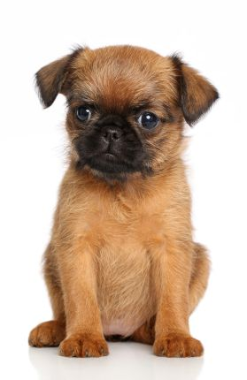
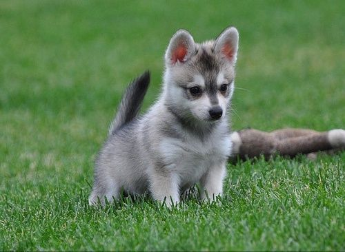
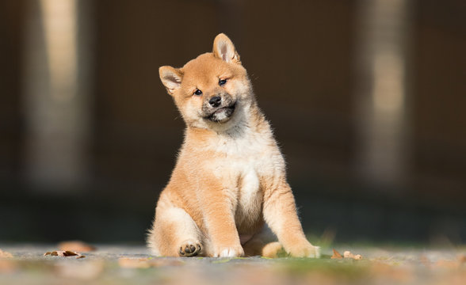
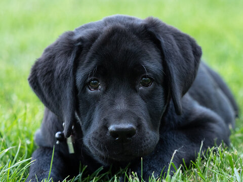
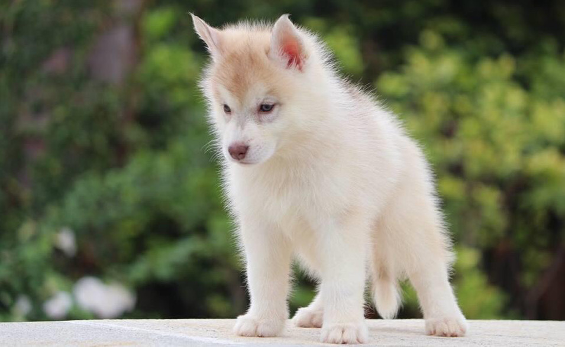
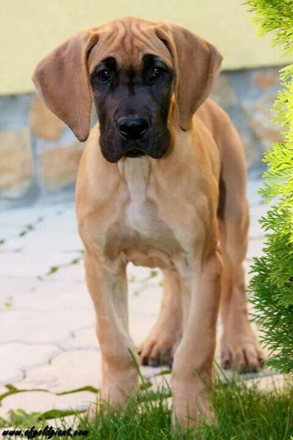
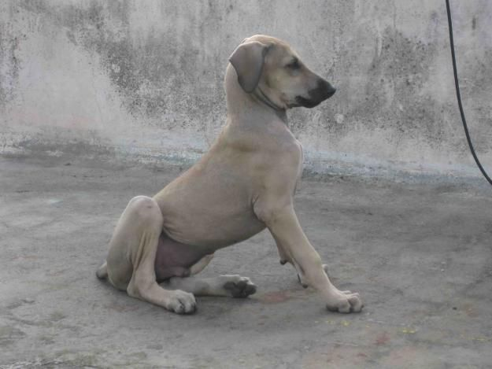

Pomeranian

ABOUT
The Pomeranian is a breed of dog of the Spitz type that is named for the Pomerania region in north-west Poland and north-east Germany in Central Europe. Classed as a toy dog breed because of its small size, the Pomeranian is descended from larger Spitz-type dogs, specifically the German Spitz. Wikipedia Life span: 12 – 16 years Hypoallergenic: No Temperament: Playful, Extroverted, Friendly, Sociable, Intelligent, Active Height: 20 cm (Adult) Colors: White, Black, Red, Blue, Cream, Tan, Orange, Brown, Grey-shaded Origin: Germany, Poland Mass: 1.9 – 3.5 kg (Adult)
shih tzu

ABOUT
The Shih Tzu is a toy dog breed originating from Tibet and having been bred from the Pekingese and the Lhasa Apso. Shih Tzus are known for their short snouts and large round eyes, as well as their ever growing coat, floppy ears, and short and stout posture. Wikipedia FCI Number: 208 Hypoallergenic: Yes Life expectancy: 10 – 16 years Colors: Black, White, Brindle, Liver & White, Liver, Light Brown, Dark Brown, Black & White, Blue, Gold Temperament: Playful, Clever, Friendly, Lively, Intelligent, MORE Origin: China, Tibet Height: 20 – 28 cm (Male, Adult, At the withers), 20 – 28 cm (Female, Adult, At the withers)
cavalier king charles spaniel

ABOUT
The Cavalier King Charles Spaniel is a British breed of toy dog of spaniel type. Four colours are recognised: Blenheim, tricolour, black and tan, and ruby; the coat is smooth and silky. The lifespan is usually between eight and twelve years. Wikipedia FCI Number: 136 Hypoallergenic: No Life expectancy: 9 – 14 years Origin: United Kingdom Colors: Blenheim, Black & Tan, Tri-color, Ruby Temperament: Playful, Affectionate, Sociable, Fearless, Patient, Gentle, Adaptable, Graceful Height: 30 – 33 cm (Female, Adult), 30 – 33 cm (Male, Adult)
Pug

ABOUT
The Pug is a breed of dog originally from China, with physically distinctive features of a wrinkly, short-muzzled face and curled tail. Wikipedia FCI Number: 253 Hypoallergenic: No Collective noun: grumble Wikimedia Foundation Term for young: pup Wikimedia Foundation Life expectancy: 12 – 15 years Colors: Black, Fawn, Apricot, Silver Fawn Temperament: Charming, Clever, Mischievous, Stubborn, Docile, Sociable, Affectionate, Attentive, Loving, Playful, Quiet, Calm
Brussels Griffon
ABOUT
The Griffon Bruxellois or Brussels Griffon is a breed of toy dog, named for their city of origin of Brussels, Belgium. The Griffon Bruxellois may refer to three different breeds, the Griffon Bruxellois, the Griffon Belge and the Petit Brabançon. Wikipedia FCI Number: 80,81,82 Hypoallergenic: Yes Life expectancy: 10 – 15 years Origin: Belgium Higher classification: Dog Colors: Black, Belge, Black & Tan, Brown, Blue, Red Temperament: Sensitive, Self-important, Alert, Inquisitive, Companionable, Watchful
Japanese Chin

ABOUT
The Japanese Chin, also known as the Japanese Spaniel, is a dog known for its strabismus of the eyes. Being both a lap dog and a companion dog, this toy breed has a distinctive heritage. Wikipedia FCI Number: 206 Hypoallergenic: No Life expectancy: 12 – 14 years Height: 20 – 27 cm (At the withers) Colors: Tri-color, Sable & White, Lemon & White, Black & White, Red & White Temperament: Cat-like, Intelligent, Loyal, Alert, Independent, Loving Origin: Japan, China
French Bulldog

ABOUT
The French Bulldog, French: Bouledogue Français, is a French breed of companion dog or toy dog. It appeared in Paris in the mid-nineteenth century, apparently the result of cross-breeding of Toy Bulldogs imported from England and local Parisian ratters. Wikipedia FCI Number: 101 Hypoallergenic: No Life expectancy: 10 – 14 years Higher classification: Dog Colors: White, Brindle, Fawn, Brindle & White, Tan Temperament: Bright, Easygoing, Sociable, Lively, Affectionate, Keen, Alert, Patient, Athletic, Playful Origin: France, England
Alaskan Klee Kai
ABOUT
The Alaskan Klee Kai is a spitz-type breed of dog, developed in the late 20th century as a companion-sized dog resembling the larger Alaskan Malamute and Siberian Husky. It is an energetic, intelligent dog with an appearance that reflects its northern heritage. Wikipedia Origin: United States Height: 38 – 43 cm (Adult, Standard Size) Higher classification: Dog Lifespan: 12 – 16 years Mass: 7.3 – 10 kg (Adult, Standard Size) Colors: White, Gray & White, Red & White, Black & White Temperament: Curious, Intelligent, Agile, Active, Quick
Shiba Inu
ABOUT
The Shiba Inu is a breed of hunting dog from Japan. A small-to-medium breed, it is the smallest of the six original and distinct spitz breeds of dog native to Japan. "Inu" is a Japanese word for "dog". Wikipedia FCI Number: 257 Hypoallergenic: No Life expectancy: 12 – 15 years Colors: Red Sesame, Cream, Black & Tan, Black Sesame, Red, Sesame Height: Male: 35–43 cm, Female: 33–41 cm Temperament: Charming, Keen, Alert, Confident, Fearless, Faithful Weight: Male: 8–11 kg, Female: 6.8–9 kg
Bulldog

ABOUT
The Bulldog is a British breed of dog of mastiff type. It may also be known as the English Bulldog or British Bulldog. It is of medium size, a muscular, hefty dog with a wrinkled face and a distinctive pushed-in nose. Wikipedia Life expectancy: 8 – 10 years Colors: White, Fawn, Piebald, Fawn & White, Brindle & White, Red, Red & White, Red Brindle Height: Female: 31–40 cm, Male: 31–40 cm Temperament: Willful, Docile, Friendly, Gregarious Weight: Female: 18–23 kg, Male: 23–25 kg Scientific name: Canis lupus familiaris FCI: standard
German Shepherd

ABOUT
The German Shepherd or Alsatian is a German breed of working dog of medium to large size. The breed was developed by Max von Stephanitz using various traditional German herding dogs from 1899. It was originally bred as a herding dog, for herding sheep. Wikipedia Temperament: Stubborn, Intelligent, Loyal, Alert, Confident, Obedient, Protective, Curious, Watchful, Courageous, Brave Life expectancy: 9 – 13 years Colors: Black, Black & Tan, Sable, Black & Silver, Grey, Red & Black Height: Male: 60–65 cm, Female: 55–60 cm Weight: Male: 30–40 kg, Female: 22–32 kg Speed: 48 km/h (Maximum, Running) Origin: Germany
Labrador Retriever
ABOUT
The Labrador Retriever or simply Labrador is a British breed of retriever gun dog. It was developed in the United Kingdom from fishing dogs imported from the colony of Newfoundland, and was named after the Labrador region of that colony. Wikipedia Lifespan: 10 – 12 years (Adult) Weight: Male: 29–36 kg, Female: 25–32 kg Height: Male: 57–62 cm, Female: 55–60 cm Colors: Black, Chocolate, Yellow Temperament: Even Tempered, Intelligent, Kind, Agile, Outgoing, Trusting, Gentle Hypoallergenic: No Origin: Newfoundland
Siberian Husky
ABOUT
The Siberian Husky is a medium-sized working sled dog breed. The breed belongs to the Spitz genetic family. It is recognizable by its thickly furred double coat, erect triangular ears, and distinctive markings, and is smaller than the similar-looking Alaskan Malamute. Wikipedia Life span: 12 – 15 years Colors: White, Black, Black & Tan, Gray & White, Silver-gray, Sable & White, Black & White, Grey, Red & White Height: Female: 51–56 cm, Male: 53–60 cm Weight: Female: 16–23 kg, Male: 20–27 kg Temperament: Friendly, Intelligent, Outgoing, Alert, Gentle Origin: Siberia Common nicknames: Husky; Sibe
Golden Retriever

ABOUT
The Golden Retriever is a Scottish breed of retriever dog of medium size. It is characterised by a gentle and affectionate nature and a striking golden coat. It is commonly kept as a pet and is among the most frequently registered breeds in several Western countries. Wikipedia Life expectancy: 10 – 12 years Colors: Dark Golden, Cream, Light Golden, Golden Weight: Female: 25–32 kg, Male: 30–34 kg Height: Female: 51–56 cm, Male: 56–61 cm Origin: Scotland, United Kingdom, England Hypoallergenic: No Temperament: Friendly, Intelligent, Reliable, Kind, Trustworthy, Confident
Afghan Hound

ABOUT
The Afghan Hound is a hound that is distinguished by its thick, fine, silky coat and its tail with a ring curl at the end. The breed is selectively bred for its unique features in the cold mountains of Afghanistan. Its local name is Tāžī Spay or Sag-e Tāzī. Wikipedia Temperament: Dignified, Aloof, Independent, Clownish, Happy Origin: Afghanistan Height: Male: 68–74 cm, Female: 60–69 cm Life expectancy: 12 – 14 years Hypoallergenic: Yes Weight: Male: 26–34 kg, Female: 26–34 kg Colors: Black, Cream, Red
Great Dane
ABOUT
The Great Dane is a large sized dog breed originating from Germany. The Great Dane descends from hunting dogs from the Middle Ages used to hunt wild boar and deer, and as guardians of German nobility. It is one of the largest breeds in the world along with its relative, the Irish Wolfhound. Wikipedia Life expectancy: 8 – 10 years Height: Female: 71–84 cm, Male: 76–90 cm Temperament: Friendly, Devoted, Confident, Reserved, Loving, Gentle Weight: Female: 45–59 kg, Male: 54–90 kg Colors: Black, Brindle, Fawn, Mantle, Blue, Harlequin Origin: Germany Breed of: Dog
Bullmastiff

ABOUT
The Bullmastiff is a British breed of dog of mastiff type and large size, with a solid build and a short muzzle. It was developed as a guard dog in the nineteenth century by cross-breeding the English Mastiff with the now-extinct Old English Bulldog. It was recognised as a breed by The Kennel Club in 1924. Wikipedia Temperament: Powerful, Reliable, Docile, Devoted, Loyal, Alert, Protective, Reserved, Loving, Calm, Courageous Life span: 8 – 10 years Colors: Brindle, Fawn, Red Weight: Male: 50–59 kg, Female: 45–54 kg Height: Male: 64–68 cm, Female: 61–66 cm Hypoallergenic: No FCI: standard
Chippiparai
ABOUT
The Chippiparai is a breed of sighthound from the State of Tamil Nadu in southern India. The Chippiparai has typical streamlined sighthound features with long legs and a lean and lithe frame built for speed. The breed is usually white in colour, although other colours can be found. Wikipedia Height: 64 cm (At the withers) Colors: Silver-gray, Fawn, Grey Origin: India Scientific name: Canis lupus familiaris Temperament: Loyal, Independent, Robust Higher classification: Dog Rank: Animal breed
Bully Kutta

ABOUT
The Bully Kutta is a type of large dog that originated in the Indian subcontinent, dating back to the 16th century. The Bully Kutta is a working dog used for hunting and guarding. The type is popular in the Punjab region of India and Pakistan, including Haryana and Delhi, as well as in Tamil Nadu. Wikipedia Higher classification: Dog Lifespan: 8 – 10 years (Adult) Colors: Black, White, Brindle, Fawn, Red, Harlequin Temperament: Aggressive, Intelligent, Energetic, Responsive, Alert, Protective Weight: Male: 70–90 kg, Female: 60–70 kg Origin: Thanjavur, Sindh Height: 81 – 89 cm (Male, Adult), 71 – 81 cm (Female, Adult)
Gull Dong

ABOUT
The Gull Dong is a dog breed of India and Pakistan that is often used in dog fighting, hunting, and guarding. Wikipedia Higher classification: Dog Rank: Animal breed Scientific name: Canis lupus familiaris Colors: White, Black, Brindle Temperament: Aggressive, Stubborn Origin: Pakistan, India
Rajapalayam dog

ABOUT
The Rajapalayam, also known as the Polygar Hound, Shikkar Hound, or Indian Ghost Hound, is a southern Indian dog breed. The breed is named after Rajapalayam, a town in the Virudhunagar, Tamil Nadu. Wikipedia Color: White Origin: India Height: 65 – 75 cm (Adult, At the withers) Higher classification: Dog Rank: Animal breed Scientific name: Canis lupus familiaris Temperament: Devoted, Affectionate
American Pit Bull Terrier

ABOUT
The American Pit Bull Terrier is a dog breed recognized by the United Kennel Club and the American Dog Breeders Association, but not the American Kennel Club. It is a medium-sized, short-haired dog, of a solid build, whose early ancestors came from the British Isles. Wikipedia Temperament: Stubborn, Friendly, Strong Willed, Intelligent, Affectionate, Loyal, Obedient, Clownish, Gentle, Courageous Origin: British Isles Lifespan: 8 – 15 years Mass: 16 – 27 kg (Male, Adult), 14 – 23 kg (Female, Adult) Height: 45 – 53 cm (Male), 43 – 50 cm (Female) Colors: Black, White, Brindle, Fawn, Tan, Brown, Blue, Grey, Red Scientific name: Canis lupus familiaris
Boxer

ABOUT
The Boxer is a medium to large, short-haired dog breed of mastiff-type, developed in Germany. The coat is smooth and tight-fitting; colors are fawn, brindled, or white, with or without white markings. Wikipedia Life expectancy: 10 – 12 years Temperament: Bright, Friendly, Devoted, Intelligent, Energetic, Loyal, Cheerful, Confident, Fearless, Playful, Calm, Brave Height: Female: 53–60 cm, Male: 57–63 cm Weight: Female: 25–29 kg, Male: 27–32 kg Colors: White, Brindle, Fawn Origin: Germany Hypoallergenic: No
ONLINE_SHOPPING
1.PETS
2.PLANTS
3.PETS-ACCESSORIES
4.PLANTS-ACCESSORIES
5.PETS-SPA & PETS-CARE
6.PLANTS-CARE
7.ADD-YOUR PRODUCTS
COSTOMER POLICIES
CONTACT US
TERMS OF USE
TRACK ORDERS
SHIPPING
RETURNS
PRIVACY POLICY